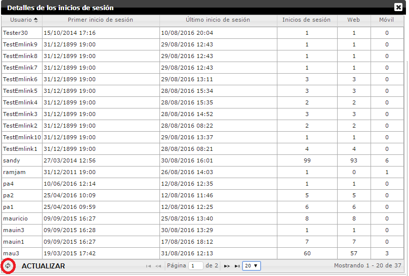

Formiik Documentation : Reporte de Usuarios
El reporte de usuarios tiene como objetivo mostrar el acumulado de inicios de sesión en el periodo mensual(gráfica de barras) y diariamente (gráfica de líneas).
En el detalle lateral se muestra el número total de usuarios que hicieron al menos un inicio de sesión durante el mes consultado. El total, es la suma de los inicios de sesión por vía Web más los inicios de sesión por vía Móvil tomando en cuenta la siguiente condición : si el usuario inició sesión en Web y en Móvil solo se tome como un registro.
El reporte se genera automáticamente al ingresar a la sección de Monitoreo | General | Usuarios, generando el reporte del mes actual. Se podrán consultar meses anteriores.
Al dar click en el botón Ver detalle, se muestra la tabla con el número exacto de inicios de sesión de cada usuario, fecha de inicio y fecha de fin, así como los inicios de sesión en web y en móvil. Con la opción de actualizar el registro.

Donde:
Usuario: Username del usuario que ha iniciado sesión.
Primer inicio de sesión: Primer inicio de sesión con el que se empezó a utilizar Formiik.
Último inicio de sesión: Último registro de inicio de sesión.
Inicios de sesión: Número de inicios de sesión realizados desde el primer inicio de sesión hasta el último inicio de sesión ( sumatoria de Web + Móvil)
Web: Inicios de sesión en web.
Móvil: Inicios de sesión desde el dispositivo móvil.
El resultado de la sumatoria debe coincidir con el valor obtenido en la consulta realizada en la base de datos con el siguiente query de SQL.
CREATE procedure [dbo].[GetLoginsMobileWebs] @ReportDate datetime,@IdClient varchar(50) AS BEGIN-- SET NOCOUNT ON added to prevent extra result sets from-- interfering with SELECT statements.SET NOCOUNT ON;
DECLARE @MinDate datetime = DATEADD(MONTH, DATEDIFF(MONTH, 0, @ReportDate), 0) DECLARE @MaxDate datetime = DATEADD(MILLISECOND, -3,DATEADD(MONTH, DATEDIFF(MONTH, 0, @ReportDate) + 1, 0)) declare @CalMonth varchar(50) declare @ClientName varchar(50)declare @HorasDiferencia int select @HorasDiferencia = convert(int ,valor)*(-1) from UtilFacturacion where llave ='horas_diferencia'set @CalMonth = CASE MONTH(@MinDate) WHEN '1' THEN 'Enero' WHEN '2' THEN 'Febrero' WHEN '3' THEN 'Marzo' WHEN '4' THEN 'Abril' WHEN '5' THEN 'Mayo' WHEN '6' THEN 'Junio' WHEN '7' THEN 'Julio' WHEN '8' THEN 'Agosto' WHEN '9' THEN 'Septiembre' WHEN '10' THEN 'Octubre' WHEN '11' THEN 'Noviembre' WHEN '12' THEN 'Diciembre'END print @HorasDiferenciaselect @ClientName = ClientName from [dbo].[Client]
WHERE idclient = @IdClient print @MinDateprint @MaxDate declare @TablaTem table(TipoAcceso varchar(50),CalMonth varchar(50),ClientName varchar(100),Usuario varchar(50),Accesos int,UltimoAcceso datetime) insert into @TablaTemSELECT 'Web',@CalMonth,@ClientName,OELC.UserName as Usuario, COUNT(idOperatorEvent) Accesos, MAX(dateadd(hh,@HorasDiferencia,DateTime)) as 'Ultimo Acceso' FROM dbo.OperatorEventLogComplex OELCLEFT JOIN dbo.Client CLI ON OELC.IdClient = CLI.IdClientleft join dbo.[User] U ON OELC.UserName = U.UserName and U.IdClient = @IdClientWHERE CLI.IdClient = @IdClient AND dateadd(hh,@HorasDiferencia,[DateTime]) >= @Mindate AND dateadd(hh,@HorasDiferencia,[DateTime]) <= @Maxdate AND IdOperatorEventType in ('00000000-0000-0000-0000-000000000004') and OELC.UserName not in ('superuser','rbarajas','prueba4','soporte','consultor','desarrollo','desarrollo1','soporte') and U.[IdRole] not in('324FE391-CF61-4F5D-8726-6BB248D09B0E')GROUP BY OELC.UserNameinsert into @TablaTemSELECT 'Mobil',@CalMonth,@ClientName,OELC.UserName as Usuario, COUNT(idOperatorEvent) Accesos, MAX(dateadd(hh,@HorasDiferencia,DateTime)) as 'Ultimo Acceso' FROM dbo.OperatorEventLogComplex OELCLEFT JOIN dbo.Client CLI ON OELC.IdClient = CLI.IdClientleft join dbo.[User] U on OELC.UserName = U.UserName and U.IdClient = @IdClientWHERE CLI.IdClient = @IdClient AND dateadd(hh,@HorasDiferencia,[DateTime]) >= @Mindate AND dateadd(hh,@HorasDiferencia,[DateTime]) <= @Maxdate AND IdOperatorEventType in ('53690814-E7F6-43AD-9D31-922ACE58B31D') and OELC.UserName not in ('superuser','rbarajas','prueba4','soporte','consultor','desarrollo','desarrollo1','soporte') and U.[IdRole] not in('324FE391-CF61-4F5D-8726-6BB248D09B0E') and OELC.UserName not in (select distinct Usuario from @TablaTem where TipoAcceso ='Web')GROUP BY OELC.UserName select * from @TablaTem END